A course has the following properties.
- It is a grouping of students who are taught as a logical group.
- It can have one or more teachers/instructors.
- You can add content to it.
- You can instantly access student code and projects.
- You can integrate the course with any LTI enabled LMS platform such as Canvas, D2L, Moodle, Blackboard and many others. Your LMS can auto-populate courses and grade data can be fed back from Codio to the LMS.
Creating a new course
To work with the course features in Codio you will first need to set up a course for your students.
-
Sign in to Codio at www.codio.com
-
If you are in the IDE, click the Codio icon in the top left corner to take you back to the Courses screen. If you are in the dashboard, click on Courses in the left menu.
-
Click the blue plus sign at the top left of the page. 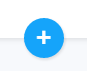
-
Select Empty Course , complete the details requested, then click Create Course. 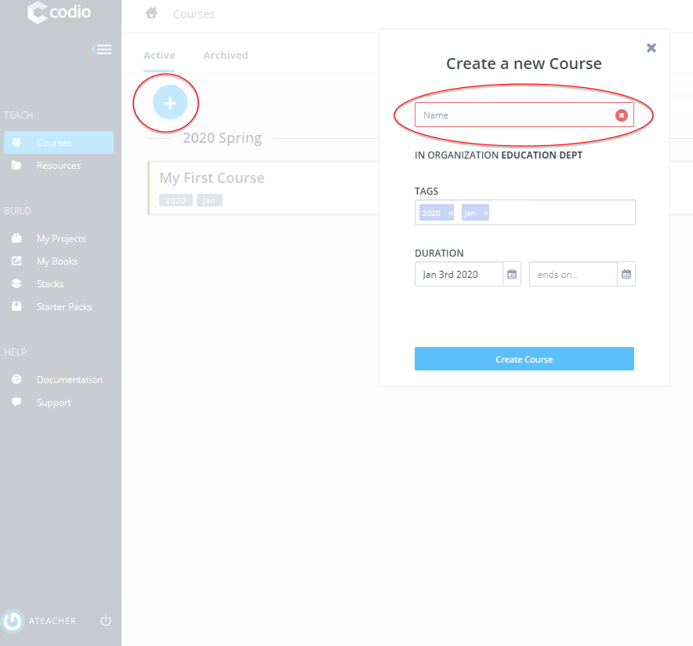
-
Your new course will appear in your Courses area.
Creating new course from share code
You can create courses from a code other users in other organisations can share to you.
-
Select the From Share Code option
-
Enter the code given and complete all other details and the course will be created for you.
Sharing your course with others
TODO

Cloning a Course
You can clone an existing course to create a new course in 2 ways
- Sign in to Codio at www.codio.com
Either:
1. Click the 3 blue dot menu item shown on the main course dashboard and select Clone Course

or
-
Select the existing course, go to the Admin area.
-
Click the Clone Course button at the bottom of the page.
-
Complete the details requested for the name of the new course, then click Create Course.
-
Your new course will appear in your Courses area.
Please note, students in the existing course will not be added to the new course.
Searching and ordering courses
Courses are shown grouped together by their creation date with the most recently created first.
The grouping intervals are
- Sep-Dec - Autumn
- Jan-May - Spring
- Jun-Aug - Summer
Ordering courses within their groups
Courses can be ordered by Name, Created Date, Student Count or Start Date within the groups
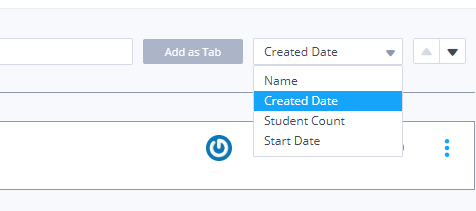
Searching
If you have a large number of courses, you can also search by name. Select the Name option and simply start typing, whereupon Codio will search within all course names and filter your list accordingly. 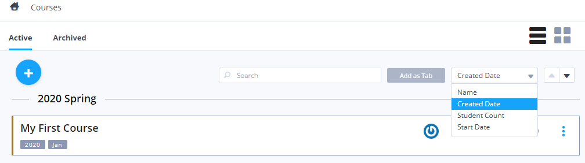
Archiving Courses
To help manage the number of courses visible to teachers they can be archived so they no longer show on the active screen for teachers. Go to the 3 blue dot menu and select 'Archive Course'. Archiving a course does not effect students and they will be able to continue working on assignments but just removes them from the active tab. They are not deleted and can be unarchived at any time in the future if they are required either by clicking on the course in the archived tab or from the 3 blue dot menu and selecting 'Unarchive Course'
Adding teachers to a course
Your course may be taught by more than one teacher. If this is the case, you can add another teacher to your Codio course in the following way:
-
From the Courses area, click on your course to open it.
-
Click on the Admin tab, centre right near the top.

-
Find the Teachers area on the left, and then click Edit.

-
Click Add Teacher
-
Search for the teacher you want to add, then click done.

-
The teacher should then appear in your teacher list for that course. Now click Done to save your changes.

-
If the teacher is not a member of your Organization, you can send them an invitation email.
-
An email will be sent to your colleague containing a link where they can sign up for a Codio account and on completion they will be added into your organization and course automatically. They must use the email address the invitation was sent to or they will not be successfully added to the organization or course.
Teaching Assistants
A user cannot be a teacher and a student in the same course, but they can be a student in one course and a teacher in another. They can be invited into the course by sending then the invitation email and they will then be able to switch between being a teacher and student. When they are in teacher mode they will see all the courses in which they are set as a teacher and when in student mode will see all the courses in which they are set as a student.
Add students to a course
You can add students to your organization and your course easily by giving each student a unique two-word phrase called a token or by giving them in Course Invitation URL. A student will enter the token and will automatically be added to the your organization and the correct course as they complete the process to create a Codio account. To do this follow the steps below:
-
From the Courses area, click on your course to open it.
-
Click on the Students tab, top centre of your screen. 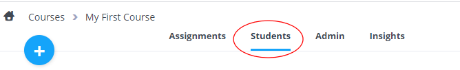
-
Click on the blue plus sign, top left of the page.
-
You can then send the 2 word token to your students, send them the Invite URL to join the course or you can add the Test students to your course. We recommend you use the Invite URL to avoid students going through the process to create a new organisation where they may click on the Free Trial button in error. There maybe a delay in us being able to get back to them to advise them of the correct steps to take but if you use the Invite URL, they should be able to get started a lot quicker.
-
If using the token then ask them to go to https://codio.com/p/join-class or select the Join Course button on our main website. They should enter the token when requested and proceed to register for a Codio account.
-
If using the URL, the students can just click that and proceed as above.
-
To view the students in your course, select the course and the Students tab once again. You will see a list of students who have successfully completed the sign-up process.
Change student passwords
You can change a student's password in the following way:
-
From the Courses area, click on your course to open it.
-
Click on the Students tab, top centre of your screen.
- You will see all students in your course displayed on this screen. Find the student whose password needs to be changed and click on the blue triple dot icon to the right of their name. Choose Change student's password and follow the steps to reset.
Remove a student from a course
-
From the Courses area, click on your course to open it.
-
Click on the Students tab, top centre of your screen.
- You will see all students in your course displayed on this screen. Find the student that you want to remove from the course and click on the blue triple dot icon to the right of their name. Choose Remove student to take them out of the course. (Note: this does not remove your student entirely from your organization - if you wish to do this, see Remove Members
Book Visibility
A book based assignment can map to parts of a book. Students can see the mapped book portions of the book in the table of contents.
You can also specify that parts of the book not mapped to by the assignment either a) can be seen or b) cannot be seen in the course. This setting applies to all assignments in the course.
It is controlled from the Admin section in the course
TODO when implemented

This option will only show in a course if there is a course containing book based assignments.
Select Edit Details button and flip the switch to change the settings as required.
- Show only assignment pages will only show the part of the book mapped to that assignment.
- Show all pages will show all the book content and the areas not mapped to that specific assignment will be grayed out in the table of contents.
Deleting a course
A course can be deleted by course teachers and organization owners. All the course data can also be exported. See Export course data for more information
- Select the course, go to the Admin area and then press the Delete Course button.

- You can delete just the course or you can also delete the course AND remove the students from your organization as well. If you select the option to Delete the Course and Students and any of the students in this course are also members in other courses, they will not show in the list of students. They will not be removed from the organization or from other courses they are also members of. The option Delete Course Only will just delete the course but not remove any students.

- Organization owners are able to view a list of any members that are no longer members of any courses and remove any users from the organization. See View organization members for more information.
Exporting course data
Course Data
Course data (including students workspaces) can be exported. We would recommend the data is exported before you Delete a Course
- Select the course, go to the Admin area and then press the Course Data button.
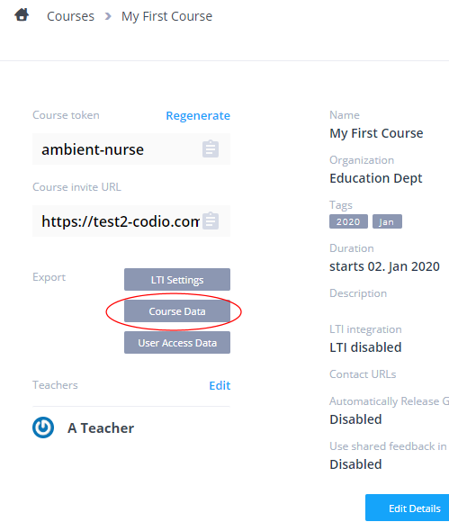
-
All the data from the course will be compiled into a zip file in the background and when ready an email will be sent to you with a link for you to download.
-
The link will be active for 7 days and after this time the zip file will be removed
-
You can also access any active files to download (and generate a new export if required) by clicking on the Course Data button

Individual assignments data can also be exported separately if required. See export assignment data for more details
If your course is LTI enabled you can also download all the unit LTI intergration URL's in a csv file. See Exporting LTI settings for more information.
User Access Data
Use this to download a CSV of user access to assignments in the course. Details include
- Username
- Users registered email address
- First name
- Last name
- Date/time when user logged in
- Access type (Log In, Log Out, Project Open, Project Close)
- Assignment name (n.b Book based assignments will report the name of the book)
- Role in course (ie Teacher/Student)
- Project path
-
IP address (IP address associated with login session)
-
Select the course, go to the Admin area and then press the Export User Access Data button.

Collection and storage of this data will be retained for maximum of 6 months.
LTI Settings
For more information see Exporting LTI settings
Working with student workspaces
If in the future you have need to review any students workspace, these can be imported back into your Codio account. Simply 'zip' up the folder and you can then import the project into your account. See creating and importing a project for more information.
Please note, the stack used in the original workspace is not included in the exported workspace so if you need to 'run' the project you should select the appropriate stack when importing the project or by switching the stack, either from the gear icon in the main projects listing or by going to Project>Stack>Settings in the project
Course contact url
Contact URL's can be set at the course level so if you have specific areas/forums for your courses for students to raise questions, you can set the contact URL's there and it will override the organisation contact url if set. You can set as many options as you require and also define the default option that will be checked automatically for the students.
Students will then be shown all the options in addition to contact Codio directly if they have a problem accessing the Codio platform, or loading a assignment.
- Select the course, go to the Admin area and Edit Details where you can then enter the text and URL's to direct students to when they use any of the Contact us options.
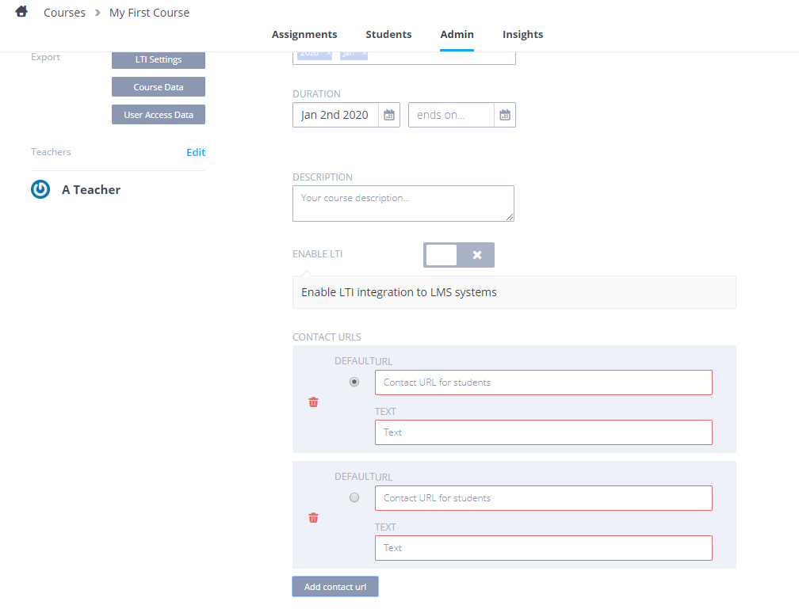
N.B. "Teacher" accounts will not be effected by this setting and they will still be able to contact Codio in the usual manner. See Support for more on this
LMS shared feedback
If your organisation uses an LMS, when grades are released a URL is passed to the LMS grading area where students/teachers can access the grading information for the assignment.
By default, only the course teachers and the individual student can access the grading preview but by enabling the LMS shared feedback option,

this will pass a different URL back to your LMS system where anyone who knows the URL can access the students grading information
Grading rubric templates
The Grading Rubric feature provides a two dimensional grid that provides grading guidance for manually assessing a coding project.

Grading Rubric templates
You will only have access to this feature if you are a member of the owners group or a teacher. To find the grading templates screen, click on your user name from the Codio dashboard and then select your organization name.
You should see a Grading Templates tab item. There will be fewer tabs visible if you are not an organization owner.

Click the New button in the to right to create a new template. You should then add rows and columns.
Rows : a row addresses a single assessment criterion. Each row has a weighting % value that you should supply. All rows must add up to 100%. Columns : each column contains a score that you can freely assign. Typically, you would have a 0 value in the first column that corresponds to a complete failure to address the criterion. The remaining columns contain a range of values that you choose with the right most column being the score for fully meeting the assessment criterion. Please read the following paragraph before choosing column values.
Calculation of scores
When you are grading student code, the grading rubric will appear and is clickable. Points are awarded according to where you click. Codio will then weight the scores according to the weightings that were provided for each row.
A final score is calculated based on your selections and is re-based to the maximum column value. You should be aware of this when choosing your column values. If you wanted your scores to calculate directly to percentages then you should choose a maximum value of 100 with other column values distributed between 0 and 100.
Applying a grading template to an assignment
To use a grading template you should select the course so you see the full assignment listing. To the top right of the list item is a pencil icon. Click on this to enter editing mode
Then select Settings and scroll down to the Grading template from the list and choose the grading template from the list. If there are not templates set up, follow the link to the organisation area to create a new template.

Grading student work
You perform the actual grading from the course. Select an assignment to grade so you see the students listed.

You can then grade in the usual two ways.
- either from the student course. With an assignment selected from the course, you click the grading box for the student and then the grading dialog appears. Press edit and click within the grading field and the template appears.
- or from with a student's code, select the Education->Grading menu item to bring up the same grading dialog.
You can then click within the template to assign a score for each criterion. Large cells are partially collapsed but will maximize when you click within the row. The score is calculated as you click.
It is important that you click the Apply button to save the score correctly.
Gigaboxes
A Gigabox is a box that has a higher memory allocation than the standard Codio boxes. The default memory allocation is 400MB, which is fine for most applications.
If you need your students to have more memory then we offer 1GB, 2GB, 8GB,16GB and GPU (for GPU-accelerated instances) boxes. These need to be purchased separately and you can add any number of either box size to your organization. You will need to specify the Gigabox size and then each student accessing the assignment will have a Gigabox for that assignment.
You can set the required Gigabox in your project or assignment in the course module and this setting will be automatically applied to the assignments as you add the module into a course
You should be aware that if you do not have enough Gigaboxes in your organization then they will be allocated on a first come, first served basis. Students who access the assignment after your Gigabox limit has been reached will see a warning.
An organization owner can see the status of the Gigabox count in the organization settings screen.
Assign a project to the course
In Codio, a teaching assignment is a project that has been assigned to a course. The scope of an assignment is entirely up to you but it could be a project assignment that a course works on. It could also be some tutorial content built using Guides. We generally recommend that it relates reasonably closely to a lesson or two. But if you prefer and it suits your structure better then you can assign as much or as little content to a Unit as you like.
There are two ways you can assign an assessment to a course.
Assign a project
The simplest and quickest thing you can do is to assign one of your projects to a course. Once assigned, we refer to it as an assessment but the assessment's source is simply a project.
- With the course selected, click on the Assessment tab at the top of the page. The list will be empty at this point.
- Now click the + button in the top left.
- Select Empty Module and create a new module.
- When created click Add Assignment and then select Project Based
- From here you can either start creating a new project or import projects in.
- To import an existing project see:
- Then select Fork Project and your project will show. If you have other projects in your My Projects area you can browse to select one of them.
- At this point you can set the name of the assignment (by default it will be the name of your project with 'fork' appended) and add a description if you wish.
- When ready, click the Create button and the assignment will be added to the course module in draft mode.
- To create a new assignment, select your starting point (the stack you wish to start from) and you can create your assignment. For more information on authoring your content, strategies etc, see Course Management
- For the assignments to be visible to your students, you need to Publish the assignment.
- Any changes you make in future to assigments will not be visible to students until you publish again
At this point, we take a snapshot of your source project, ready for the students to clone when they start the assignment. Any changes you make to the source project will not be reflected automatically in the student assignment.
Once assigned to the course, each student will be able to access the assignment from their dashboard. Go to the Students tab and login as one of the test students. Make sure you have the correct course and module selected form the dropdowns. You will now see the assignment in the list. If you don't, make sure the module dropdown has the correct module name selected. You can then switch back to your teacher account.
Assign resource modules to the course
You can assign existing course modules and all of its assignments to your course with a single action.
To assign an existing course module, follow the steps below:
-
From the Courses screen, click on your course to open it.
-
Click on the blue plus sign, top left of the page, and choose Copy from Existing.
-
Choose the course you want to copy the content from and select the modules you wish and click Select
-
The module will appear in your course.
Removing course module from a course
You can remove course modules from a course selecting the Delete button

You can also remove individual assignments from a module, clicking the Delete button for that assignment
Warning Deleting a module or assignment from your course also removes all student data for all the assignments in the module (including assessment data and results) and cannot be restored so you may wish to Download CSV before removing the module or assignment.
Update course
TODO Where you are using content in multiple courses and changes are made to that content, these changes will be detected and you can upgrade the content of the other courses to the latest version from the Update Course button. The code workspace, other than the guides folder, is never updated as this can invalidate work for students who have already started the assignment.
Updates may be new assignments added to the course, a new version of the stack, updates for assessments in a guide or book, changes to the general guide content or a change in the order of assignments in the course.
Most assessment changes can be safely upgraded but if you have altered the structure of a question (for example multiple choice changed from single response to multiple response) then student response data can be invalidated.
Any changes to guides content can be applied. You should be careful about making major structural changes as students who have already started the assignment could be confused. The code workspace folder will not be impacted, so any student work in this folder will not be impacted.
Select assignments to update
A list of all modified assignments will be shown. You can select the assignments you wish to update. The Update Course button will no longer be shown if updates have already been applied.
Stack updates
If updates to the stack are detected and students have already started the assignment(s) you can elect to update the stack as well as the guides content by pressing the Update Content and Stack button.
However, any data outside the code workspace folder will be lost for all students who have already started the assignment.
If there are no detected updates to the stack or no students have started the assignment(s), this option will not be shown.
Test students
Codio automatically creates 3 test students for you. This allows instructors to view the student experience when assignments are assigned to courses.
- They can be seen in the members section. If there are not 3 student listed then you can regenerate them from this screen.

- You can log in as the student here by clicking the Login as button:
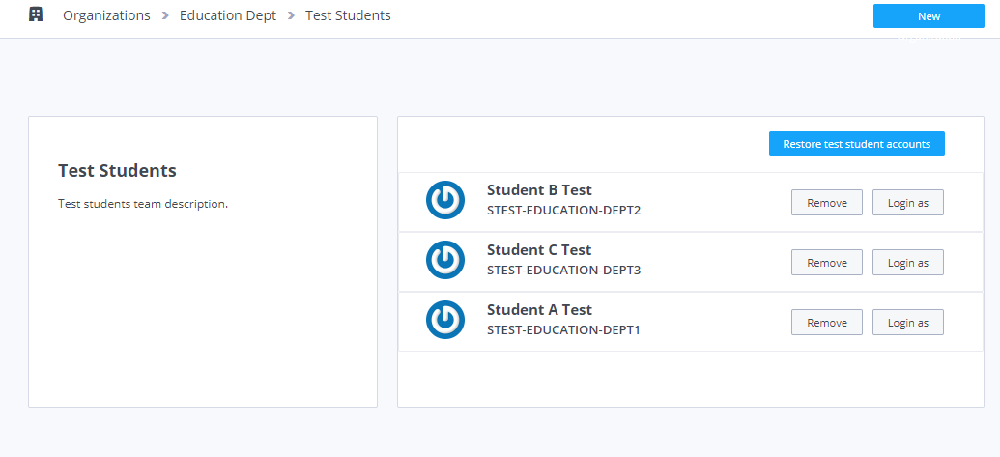
- Or you can also log in as the student within a course as well:
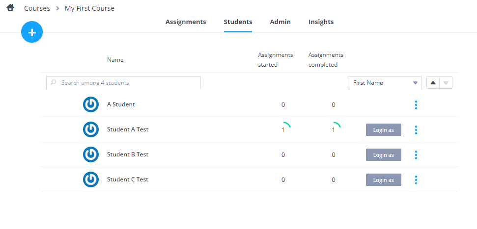
- You can switch back to teacher mode by clicking Switch back to teacher account.
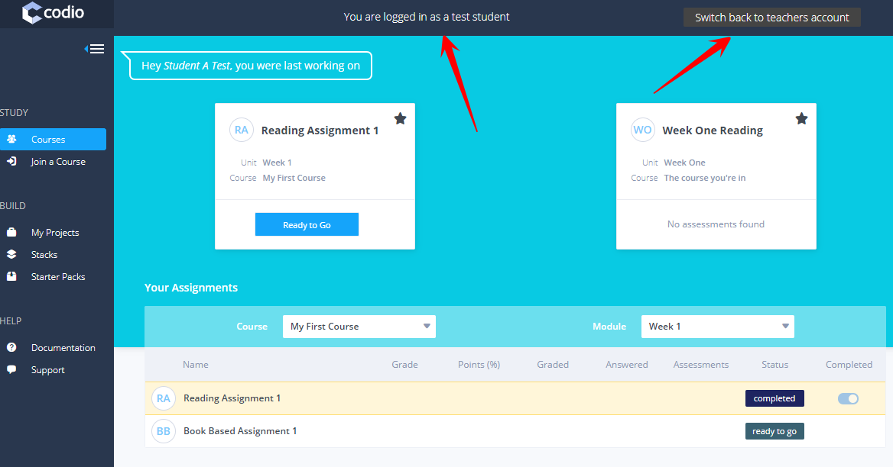
If your course is LMS integrated then you will need to perform your testing from the LMS and not use the Codio test students.
Excluding Files
Files/folders may need to be excluded from students assignments. Such files may be unused resources/logs and other files used when testing the assignment prior to publishing.
This can be handled by using .unitignore file in the source project and when published to a course, these files/folders will not be available to the students.
Enter on a new line the file/folders to be excluded defining them relative to the location of the .unitignore file and defining folders with /
For example if the .unitignore file is located in the project workspace and you wish to exclude
testing&node_modulesfolder- the file
checkscore.jsin theviewsfolder - the files
app.jsandREADME.md
the .codioignore file will be
/testing
/node_modules
/views/checkscore.js
app.js
README.md
Managing Assignments
On the module assignment screen you can manage the following settings
- Change the name of the assigment
- See if an assignment is in DRAFT mode, and therefore not visible to students in the course
- Publish the assignment. This is required before students will be able to see the assignment and also if you have need to update the assignment those changes will not be visible to students until it is published again
- View the version history of the assigment publications, This allows you to view the version history. You can see
- date/time when the assignment was published,
- name of the person who published the assignment,
- the name and version of the stack assigned to the assignment.
1. View (and change) the stack settings for the assignment. This option is only available for project assignments. It allows you to switch the stack used by a assignment. If a stack is set to Use latest version then - when a assignment has been assigned to a course, any student who has not yet started the assignment will use the latest version of the stack. - the assignment itself will remain on whatever stack version was last assigned. If you want to change it to the latest created stack version then you should click the Save Changes button to update it. 1. Delete the individual assignment from the module. You are required to enter a confirmation code to proceed and you can then do one of the following - Select Convert content to a project to delete the assignment and save the assignment contents to your projects list. - Select Delete content to delete the assignment and its content entirely. 1. Delete the entire module. You are required to enter a confirmation code to proceed 1. Reorder the modules in the course.
You can also change the order of the assignments within a module by dragging an assignment into its desired position in the list.
To the top right of the list item is a pencil icon.
Click on this to enter editing mode. On this screen you can:
- Pin the assignment
- Amend the Unit Duration of the assignment
- See at a glance how many students have started the unit
- Release the grades
- View Insights for the assignment
- Access the assignment settings
From the 3 blue dot menu area you can:
- Run the Plagiarism Checker
- Download CSV with student grade data for the assignment
- Export assignment data. This allows you to export all the data for the assignment, including the students workspaces. All the data from the course will be compiled into a zip file in the background and when ready an email will be sent to you with a link for you to download. The link will be active for 7 days and after this time the zip file will be removed. All the data from all the courses/modules/assignments in the course can also be exported.
Assignment Settings
Click on the settings icon to view the assignment settings
Assignment Settings
Available from the Settings area.

Pin/unpin units
This allows you to pin or unpin an assignment. Pinning an assignment ensures that the assignment is shown in a large box at the top of the student dashboard. You would typically pin an assignment if this is the assignment you are currently teaching. When you have finished teaching it, you would unpin it. You should not have more than four assignments pinned.
Disable/enable assignment
You can enable or disable assignments that have been assigned to a course. This is useful when your students are working in controlled assessment conditions and you only want them to have access to their work within a prescribed timeframe. For book based assignments, you should be aware that if another assignment gives access to the book then students can access the book. You have the ability to disable access to content outside the current assignment but if the student is able to access the terminal window or see the file tree then access to areas that you intend to be disabled cannot be guaranteed. For project assignments and normal projects, preventing access can be guaranteed.
Visibility on completed
You can specify the students ability to access the assignment when completed. Not available for book based assignments
- 'None' will allow students to continue to access and work in code files, any assessments in the assignment can be seen but not changed,
- 'Read-Only' will allow students to access their assignment but not make any changes.
- 'No Access' will not allow the students to access their assignment.
Visibility on disabled
You can specify the students ability to access the assignment when disabled. Not available for book based assignments
- 'Read-Only' will allow students to access their assignment but not make any changes.
- 'No Access' will not allow the students to access their assignment.
Unit duration
You can specify a start and a stop date and time for an assignment. The assignment will be disabled prior to the start date at which point it becomes available to students in their dashboard.
Once the stop date and time is reached you can set the assignment to be marked as complete and/or disabled. If you elect to disable access, then depending on your disabled assignment settings students will either be refused all access or can have read-only access to the assignment.
Please note, that selecting mark as complete will not stop students who have not started the assignment from being able to access the assignment after the stop date/time has been reached. If you wish to manage this, look at using the disable assignment and mark as complete option.
For book based assignments, you should read the caveats mentioned in the Disable/enable assignment section above.

For more information on using Mark as complete please click here.
Penalties
If applying penalties for late submission it is recommended that you set the end date/time for the assignment to the last date/time of your penalties. You can set the penalty date/time after the assignment end date/time but for students to then be able to work you will need to change the individual students assignment status from Completed and also adjust the deadline for each of them.
Time Zones The time zone is taken automatically from your browser, so please check your time settings are correct.
Set assignment penalties
You can specify penalties in the event that students do not complete the assignment within agreed timescales. Incremental penalties can be applied if required.

Each row in the table will contain the following fields :
- Number (auto-incremental)
- Date
- Time
- Penalty % (The % of the total score for the assignment to be deducted as a penalty)
- Message (If the message field is not specified, then a default message will be generated - see below)
Default Messages:
1: If a student opens a project after deadline or the student is working in the assignment when deadline is reached
Deadline X (the table row number) has been reached. This deadline carries a penalty of Y%. You can review your answers with no penalty. However, if you decide to change any answers by pressing the Modify button beneath a question, a Y% penalty deduction will be applied to your overall results. Once a modify button has been pressed once, the penalty deduction will be applied and you will be free to modify as many questions as you like with no additional penalty
2: If a student presses a Modify button past a deadline
Deadline X (the table row number) has been reached. This deadline carries a penalty of Y%. If you proceed, a Y% penalty deduction will be applied to your overall results. You will then be able to modify as many questions as you like with no additional penalty
3: Final deadline (assignment end date)
Once the final deadline hits (if one is set), the assignment will be forced to read-only and then following message will be displayed to the student :
You have exceeded the final deadline. You are no longer able to make changes to your answers. You are free to review your answers.
Teacher/Instructors Dashboard:
Penalty indicator: If a penalty was applied then the grade field will have a light red background. This should be the case even if no grade has been calculated yet. Hover above the field to see the penalty details (#, date/time, penalty %).
 Final grade field: this field will show the final graded score less any penalty deduction. If the field is overwritten by the teacher/instructor, then the penalty deduction will not be applied.
Final grade field: this field will show the final graded score less any penalty deduction. If the field is overwritten by the teacher/instructor, then the penalty deduction will not be applied.
Adjusting deadline for individual students
The set deadline(s) can be adjusted forward by a number of days if required for individual students.
Select the assignment from the course assignments list and click on the 3 blue vertical dots and select 'Adjust deadline'

You can then adjust the deadline forward by as many days as you require

When applied, the adjustment will then show next to the grade field in the teacher/instructors dashboard. The deadline in the image below was adjusted by 4 days
Grading Template
Where you can set the grading template to use for the assignment
Autograde Method
Autograde on assignment complete
This option provides two ways of autograding assignment scores for each student. The grading field is populated by a script authored by the project author without the need to manually populate it. The autograding script is triggered once an assignment is marked as complete.
A assignment is marked as complete in any of the following ways
- Students mark the assignment as complete from their dashboard.
- The teacher can also mark the assignment as complete for a student from the Course dashboard with the assignment selected.
- The teacher can mark all assignments as complete for all students by pressing the Actions button. This button appears on the assignment screen.
- If you are using the Assignment Duration feature, all student assignments are marked as complete as soon as the assignment duration expiry date and time is reached.
The two autograding options can be found in the assignment settings.
- Use the auto-graded assessments within the assignment to auto-populate the grading field with the aggregate % score from all assessments.
- Run a script to generate the grading either as soon as the student (or teacher) marks the assignment as complete in their dashboard or when the assignment duration expires.
The two options can be found in the AUTOGRADE METHOD drop-down list.
Transferring authored content assessment total
If you have created auto-graded assessments within your authored content, Codio aggregates all scores so you can see them in the Courses dashboard. You will see that there is a total percentage calculated. This percentage value is transferred into the grading field. If you are using LMS integration then this grading field is then transferred into your LMS gradebook once you release the grades.
Running a custom script
A more advanced way of populating the grading field is to write your own custom script that evaluates the student code. This script can then transfer the grading value into the grading field.
If you are using an LMS platform with Codio then be sure to write a percentage value into this field to maintain compatibility with LMS gradebooks.

Secure scripts
If you want your scripts to run securely such that the student has no way of either viewing the script or viewing other files that might contain secure data then you should place those scripts and files in the .guides/secure folder. Codio ensures that only the original project author is able to access this folder but when it is assigned to Students as an assignment, it is not accessible in any way and the script runs in an ephemeral container isolated from the students assignment.
Timeout
Your script must execute within 3 minutes or a timeout error will occur.
Accessing authored content assessment results
You are able to get scores attained by students in authored content based autograded assessments. This data is in JSON format and can be accessed from the CODIO_AUTOGRADE_ENV environment variable. Below is an example.
{
"assessments": {
"stats": {
"total": 2,
"answered": 2,
"correct": 2,
"totalPoints": 12,
"points": 8
},
"info": [{
"name": "Test 1",
"points": 5,
"answer": {
"correct": true,
"points": 5
}
}, {
"name": "Test 2",
"points": 7,
"answer": {
"correct": true,
"points": 3
}
}]
},
"completedDate": "2017-02-07T09:47:54.471Z"
}
You can get both summary data and data for each assessment individually.
Regrading for an individual student
If students set their work to 'complete' such that an autograde step is triggered then you can regrade the work by resetting the complete switch and then setting it again, which re-triggers the autograding.
Regrading all students
From the Actions area of the assignment, you can regrade all students that have already been auto-graded by pressing the Regrade All button. This is useful if you have found a bug in your grading script. If you follow (or use) the code sample shown at the bottom of this page you can see how the original student submission date is handled.
Testing and debugging your grading scripts
IMPORTANT: please read this section carefully.
We provide a way of testing autograding scripts when authoring your project. This is described below. You should make use of this before publishing your project to a course.
You should be aware that once the assignment has been published to the course, any changes made to the assignment's source project are not automatically reflected in the published assignment. As a result, if you include your main grading logic within the project itself and if that script has bugs, you will not be able to fix the bugs without deleting the assignment, fixing the bug and finally republishing the assignment. All student data will be lost as a result. However, if all your scripts are stored in .guides/secure folder, you can update and test them and you can then Update assignment
Another strategy is to use a simple bootstrap launcher that loads and executes the script from a remote location that you can edit and debug independently of the Codio box.
The following example bash script shows a Python script that is located as a Gist on GitHub. This script might be called .guides/secure/launcher.sh.
#!/bin/bash
URL="https://gist.githubusercontent.com/MaximKraev/11cd4e43b0c43f79d9478efbe21ba1b9/raw/validate.py"
curl -fsSL $URL | python - $@
It is important that it is located in the .guides/secure folder. You then specify the full filepath .guides/secure/launcher.sh in the Set custom script path field in the assignment settings.
You are now free to debug the Python script and fix any bugs that you may have noticed once students have started work on the assignment.
Testing your script in the IDE
We provide the ability to test your autograding script from the Education -> Test Autograde Script menu.
This option lets you specify the location to your autograding script and run it against the current project contents. It also lets you simulate scores attained by any autograded assessments located within the Codio Guide.
You should be aware of the following points.
- When you press the Test Script button
- all output to
stdoutandstderrare displayed within the dialog - the grade as returned by your test script is at the bottom of the output section
stdoutandstderroutput is not available when running for real (not in this test mode) as the autograding script runs invisibly when the assignment is marked as complete. As such, you should generate output for testing and debugging purposes only.- If you want your script to provide any feedback to the student, then you should output it to a file that the student can access when opening the project at a later date. In this case you will need to allow read-only access to the project from the assignment settings after being marked as complete.
- Your script must execute within 3 minutes to avoid a timeout error.
If the Guide has autograded assessments then the test takes its data from the fields shown in the dialog. All of your assessment settings are accessed as described above under Accessing Guide assessment results.
Example Python grading script
Below is an example Python file that might be loaded by the bootstrap script above.
Notice that the only code you need to modify is near the bottom. The other functions are helpers and can be used for any test in any assignment.
import os
import random
import requests
import json
import datetime
# import grade submit function
import sys
sys.path.append('/usr/share/codio/assessments')
from lib.grade import send_grade
##################
# Helper functions #
##################
# Get the url to send the results to
CODIO_AUTOGRADE_URL = os.environ["CODIO_AUTOGRADE_URL"]
CODIO_UNIT_DATA = os.environ["CODIO_AUTOGRADE_ENV"]
def main():
# Execute the test on the student's code
grade = validate_code()
# Send the grade back to Codio with the penatly factor applied
res = send_grade(int(round(grade)))
exit( 0 if res else 1)
########################################
# You only need to modify the code below #
########################################
# Your actual test logic
# Our demo function is just generating some random score
def validate_code():
return random.randint(10, 100)
main()
Example Bash grading script
Below is an example bash script file that would be stored in .guides/secure folder
#!/bin/bash
set -e
# Your actual test logic
# Our demo function is just generating some random score
POINTS=$(( ( RANDOM % 100 ) + 1 ))
# Show json based passed environment
echo $CODIO_AUTOGRADE_ENV
# Send the grade back to Codio
curl --retry 3 -s "$CODIO_AUTOGRADE_URL&grade=$POINTS"
TODO
Teachers Grading
Assessments Grading
Script Grading
This allows you to specify an auto-grade script that should run when the assignment is marked as complete. The default setting ensures that any grades generated from auto-graded assessments and grades from free text assessments are automatically transferred into the grading field.
Actions area settings
Additional options are also available if you select the Actions button.
- Plagiarism checker
You can run plagiarism detection from the blue dots menu on the assignment or the Actions area.
- Mark all as completed
Certain actions can be triggered when a student marks an assignment as complete: Auto-graded assessment scores can be passed directly to the grade field and/or Scripts can be executed for assessing the student code and assigning the grade
Students can mark the assignment as complete from their own dashboards but a teacher is also able to do this on their behalf either individually or for all students either by pressing the Marking All As Completed button to mark all student assignments as complete, hover over a student to see the switch appear to the left of the students name, which you can then activate orAccessing student work and going to the Education->Mark as Completed menu item within the IDE.
Teachers can also mark complete assignments as incomplete for all students in the course or for individual students selecting the switch or by accessing their assignment.
- Unmark as complete
Where the assignment can be marked as not complete for all students
- Download CSV
This allows you to download a CSV file with student grade data for the assignment.
- Reset
This option will destroy all student work.
In the event that an assignment in your course is updated and, for some reason, you cannot use the Update course option, you can reset it so all students, including those who have already started the assignment, are updated with the new assignment.
You can reset the assignment for all your students by selecting either
- the Actions button and then the Reset button
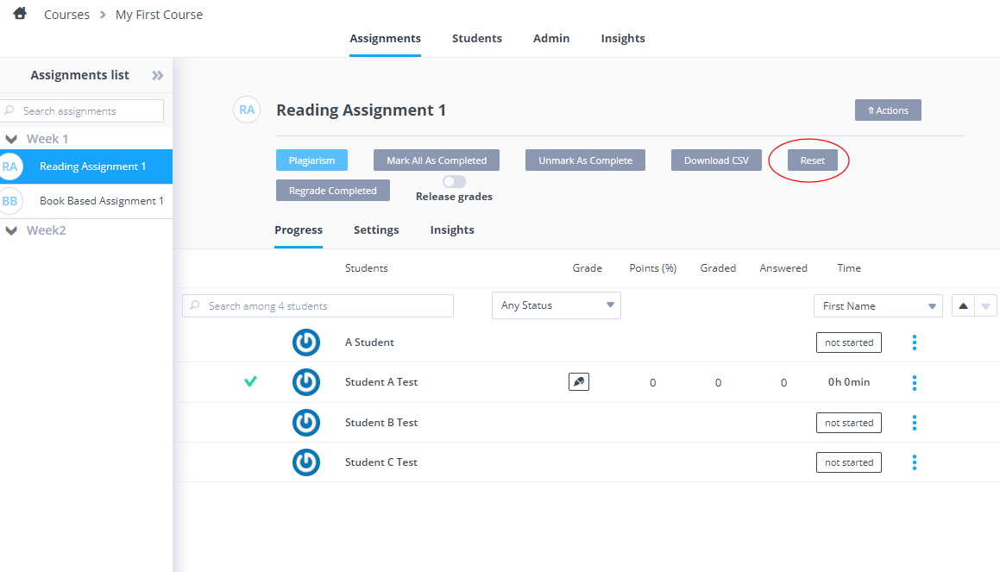
or
- you can reset the assignment for individual students from the 3 blue dot menu
-
Regrade completed This option should be selected if you are running an auto-grade script when the assignment is marked as completed and you want the script to be re-run. Click here for details on end of assignment auto-grade scripts.
-
Release Grades By default, grades are not shown to students or transferred to the LMS gradebook if you are using LMS integration for a class. When you are ready to do so, you can select the option from here.